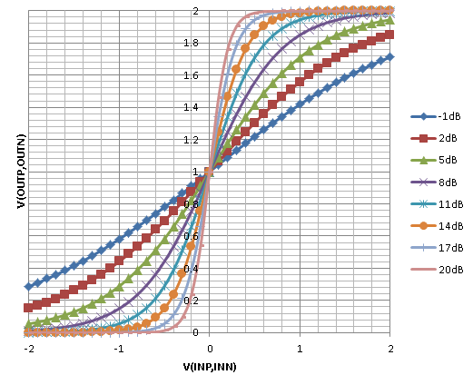

Ch.3 AMS Behavioral Modeling¶
Overview¶
- Analog設計者は、これまでボトムアップ手法により設計を行なってきた。
- 複数のサブシステムを含んだシミュレーションを行うとき、Trレベルでは時間がかかるため、一部ブロック(特性として見る必要のないブロック)をビヘイビアモデルに置き換えるなど、シミュレーションの高速化のためだけに機能モデルを使用してきた。
- このようなボトムアップアプローチは、対処療法的であり、プロジェクトの銀の弾丸ではない。
- システム設計段階から、モデルによりスペックの検証を行うトップダウン設計に移行する必要がある。
- トップダウン・アプローチを取ることで、Executable Spec(検証可能な仕様書)となる。
Modeling classifications¶
- アナログの場合、決まった抽象度というものがない。また、デジタルと異なり、モデル開発をサポートするようなツールもほとんどないため、モデル作成にかかる時間が千差万別となる。
- シミュレーション時間も、抽象度によって、大きく異る。
- 効率的なシミュレーションを行うためには、要求に応じた適切な抽象度・複雑度のモデルを用意する必要がある。
- モデリングする際には、以下のことを考慮する必要がある。
- 対象としているシミュレータがAnalog/Digital/Mixed-Signalを扱えるかどうか。
- 適切な階層(抽象)構造となっているか。
- モデルにどこまでの特性を組み込むか。1次の線形特性か、非線形特性か。
- モデル化において重要なことは、モデルの使用目的を把握すること。
- モデルの使用目的が把握できていないと、無駄に抽象度の低いモデルを作ったりしてしまう。
Model Development¶
- モデルの複雑さは、どのレベルであっても要素の数に依存する。
- もし、ブロックが巨大なピン数を持っていた場合、リーズナブルなレベルまでブレークダウンさせる。
- ただし、これ以上機能として分割できないようなレベルにまで落とし込むのは、機能モデルとしては適切ではない。
Design Topological Considerations¶
- サブシステムへの分割の仕方は非常に重要である。
- 時には、常識が誤った方向に導くことがある。
- 通常、デジタル回路によって制御されるアナログ回路があった場合、2つのブロックに分けられがちである。
- 上記のように分けてしまうと、アナデジ間の制御信号の抽象度が非常に低くなるだけでなく、2つのモジュールがセットでないと、検証ができなくなる。
- モジュールを一つにして、ブロック(always?)で分割するのがよい。
Types of Modeling¶
- 一般的に、大規模システムの検証に用いられる抽象度のレベルとしては、下記のものがあり、用途・目的に応じて、適切な使い分けが必要。
- Device based design(Spectre, SPICE): 回路図から生成されたネットリスト、もしくは、Pure SPICEで解釈可能なマクロモデルで記述されたネットリスト。
- Analog modeling(Verilog-A): 電流/電圧の関係式を記述したモデル。アナログソルバ(SPICE)で解かれる。
- Mixed-signal modeling(Verilog-AMS, VHDL-AMS): アナログ動作とデジタル動作が同時に記述可能なレベル。
- Discrete real number modeling(Verilog-AMS, VHDL, SystemVerilog): 電気的な動作を実数の信号レベルに置き換えたモデル。インピーダンス効果(電流・電圧の関係式)は無視され、デジタルソルバで解かれる。
- Logic modeling(Verilog, VHDL, SystemVerilog): 0,1,X,Zでモデリング。
Discrete Digital Modeling¶
- デジタルの入出力関係だけが記述されたモデル。デジタルソルバで解析。アナログ要素は含まない。
- Verilog, VHDL, SystemVerilogで記述が可能。
- アナログIPでもデジタルの入出力のみに着眼して、本レベルで記述されることがある。
Continuous Analog Modeling¶
- システムの電気的特性が記述。言語は、Verilog-A。
- 電圧/電流の関係が記述。また、積分・微分オペレータも使用可能。
- Verilog-Aモデルは、非線形常微分方程式に変換。他のSPICEコンポーネントと同様の方法でSPICEソルバにより解析。
- Trレベルと比較して、10～50倍の高速化が可能。シミュレーションのスピードアップのためには、ノード数の削減と方程式数の削減が鍵。また、弱い非線型モデルにすることで、タイムステップを伸ばすことが可能。
- デジタルの記述は全て電気的特性に変換され、SPICEソルバで実行される。そのため、論理シミュレータで解くよりも低速になる。また、IPCを用いたCo-Simで解析することも可能であるが、解析速度はアナログシミュレータのタイプステップに律速される。
Mixed-Signal Modeling¶
- Mixed-Signalに対応したシミュレータは、1つのカーネルで離散的なデジタル回路と連続的なアナログ回路を解くことができる。
- Verilog-AMS, VHDL-AMSが記述に用いられる。
- AMSでは、デジタルとアナログを自然にそれぞれの抽象度で記述することができる。また、データとイベントは相互に通信可能。
Real Number Modeling¶
- 電気的な信号を実数としてモデル化する手法。実数信号は、電圧もしくは電流のどちらかを表現するのに使用される。
- RNMは、Verilog-AMS, SystemVerilog, VHDLで使用可能。
- RNMは、デジタルソルバのみで解かれるため、SPICEと比べて1000～100万倍の高速化が可能。
- 双方向的なアナログの相関関係をモデリングすることはできない。
Combined Approaches¶
実際には、上記の抽象度のレベルを混ぜて使用されることが多い。
例えば、RFレシーバの場合、下記の抽象度が混在で使用される。
- RF信号パス: RNM
- ベースバンド, バイアス、パワー供給: Electrical
- 制御回路: ロジック
Basic Moeling Formats¶
Model Operational Description¶
- 差動入力、差動出力。出力には入力をゲイン倍した電圧が出力される。
- ゲインは、デジタルの3bitバス入力(GAIN[2:0])。
- 実際のPGAにあるその他のピン(電源、バイアス入力、出力のEnable信号)あり。
- 出力は、(VDD-VSS)/2を中心とする。
- 出力端子の出力抵抗はRoutとする。
List of terminals pinName expression INP,INM 差動入力 V(INP,INM) OUTP,OUTN 差動出力 V(OUTP,OUTN) GAIN[2:0] ゲイン制御端子( dbmin@GAIN=000, dbmax@GAIN=111 ) VDD,VSS 電源 VB バイアス入力 EN Enable信号( ハイインピーダンス@EN=0, 通常出力@EN=1 )
AMS Programmable-Gain Amplifier Model¶
- pga_verilogams
端子の属性定義¶
- deciplines.vamsを定義 (/common/appl/Cadence/mmsim/12.1_isr2/linux/tools.lnx86/spectre/etc/ahdl/deciplines.vams)
- アナログ信号(入出力、電源、バイアス入力)は、electricalで定義。analogブロック内で使われI(),V()を使用して測定。アナログソルバで解かれる。
- デジタル信号(GAIN,EN)は、logicで定義。デジタルブロック内で使われ、1,0,X,Zの値を持つ。デジタルソルバで解かれる。
パラメータ定義¶
- 定義した数値はデフォルトで、後から変更可能。
- Trは、スペックではない。ただし、ゲインとコンダクタを変える場合にランプ的に変更するのに使用する。設定しないと、アナログソルバでtime step errorが発生します。
内部変数定義¶
- realとintegerは内部変数。
- アナログブロックでもデジタルブロックでもどちらでも使用できるが、どちらか一方でしかアクセス出来ない。
- アナログの場合はanalogブロック内でアップデートされ、デジタルの場合はinitialかalwaysブロック内でアップデートされる。
デジタルブロック¶
- initial文: Simulationの最初で計算される。
- DBinc(GAINの1bit辺りのゲイン増加両)を計算。
- always文: Sim中繰り返し計算される。
- GAINの各Bitをexclusive-ORする事で、入力信号にXが含まれるかを確認する。
- GAIN[2:0]にXが含まれる場合はAdb=-40を設定、含まれない場合は、Adb= dbmin+DBinc*GAINでゲインを計算。
- @(GAIN)が重要。これを入れることによって、always文の解析が次のGAIN信号が変化した時に評価されるようになる。これが無かったら、解析時間は0[sec]で止まってしまい永久ループとなってしまう。
アナログブロック¶

Analog PGA Model¶
- pga_veriloga
- アナログモデルは、デジタルソルバが無い場合、又は全PINがアナログ端子として定義されている場合に使用され、VerilogAで記述される。
- verilogAを使用(VerilogAMSの一部)
- verilogAMSで示したアナログブロックと同じ物を使用できる。ただし、デジタル部は存在しない。
端子の属性定義¶
内部変数定義¶
- VerilogAMSとほぼ同じ。ただし、全てアナログブロック内で使用。
- [追加]Gint：GAINバス入力からinteger(0～7)の値を求めるのに使用。
マクロの追加¶
デジタルノードの電圧を変換するためのマクロ(`L())を追加
マクロ定義する事で、複数個所の同じ処理を簡易化（コンパイル時の影響はなし）。
デジタルブロックで定義されていたTrue/False判定は複数個所で実行されていたためマクロ化した。
アナログブロック¶
GAINバスは、electricalノードから`L()マクロを使ってロジックレベルを検知し、0～7のintegerを返す。
Adb(dbゲイン)はGintを元に計算され、Av(比率ゲイン)はAMSの場合と同じ評価式で計算される。
残りのコードは、EN信号のロジックレベル判定以外はAMSと同じ。
Real PGA Model¶
- pga_wrealmodel
Real numberモデルはデジタルソルバで実行される。
AMSモデルのデジタルブロックは再利用。アナログブロックのみ書き直しとする。
端子の属性定義¶
- ピンは全てwreal定義
- 注意：wrealはdisciplineではなく、単なるシグナルタイプ。デフォルトは、logicのdiscipline。
内部変数の定義¶
- 出力抵抗が不要になったのと、値の変化に立ち上がり時間がなくなるためRoutとTrは不要。
- Activeはintegerとして定義する必要がなくなり、内部ピンとして定義される。
デジタルブロック¶
verilogAMSのデジタルブロックはそのまま。
verilogAMSのアナログブロックをデジタル処理として置き換える。
wire Active=...は、制御のために内部pinとして定義。式の結果が変化した時にActiveの値がアップデートされる。
Digital PGA Model¶
- pga_verilog
Simにおけるアナログのオペレーションはブラックボックス扱い。
アナログ信号は、H/L信号で表現される。また、受け付けない場合はX、オフした時はZに遷移する。
ブロックの制御特性は内部で計算されるが、それらの値はテストベンチからのダイレクトアクセスか、プロットによる保存によってのみ測定可能。
Additional Model Coding Examples¶
- Dフリップフロップのデジタルモデル
- オペアンプのアナログモデル
- ADコンバータのAMSモデル
- 離散時間ローパスフィルタのRNモデル
Digital: Verilog D-type Flip Flop¶
Verilog言語は論理的関係性を定義
ここでは標準Verilogフォーマットによって書かれたD-FFモデルを例に述べる
以下にD-FFの簡単な記述を示す
Q出力はClockかResetの立上りエッジで更新される
以下にD-FFの動作をチェックする簡単なテストベンチを示す
DFF_TBは外部ピンが必要とされないシミュレーションのトップレベルのテストベンチモジュール
DFF1モジュールはインスタンスDUTとしてインスタンス化され、Clockへ100MHzのパルス波を打ち込み、そしてDataとResetを数度変化させることで期待通りにブロックが動作するかの検証を行い、モジュールではこれらで駆動する信号とレジスタを定義する
留意すべきは、離散timescaleはこのテストベンチモジュールのために規定されているということである
モジュールがあらゆるところで一貫して定義されるように、プロジェクトのtimescaleとresolutionを定めなければならないことに注意
一般的に、(もっとも一般的に1nsか1psの時間単位)デジタルモデルの標準的な実行と、(システム速度に応じて1nsから1asにわたる)プロジェクト条件に基づいてきまるresolutionによって選ばれる。
DFF1_TBモジュールのシミュレーション波形結果を以下に示す
- Qは初期値を設定していないため、Data入力がassignされるClockの最初の立上りエッジまでは不定値(X)であることに注意
- DataがHigh/Lowに変化すると、次のClockの立上りエッジでQの値が変化する
- ResetがHighになるとすぐにQはLowになり、ResetがHighの間はClockが叩かれてDataの値が変化してもQには影響しない
- Resetが解放されると、次のClockの立上りエッジで再びDataの値をQへと伝搬させる
- Qbは常にQの反転である
{kind=link}